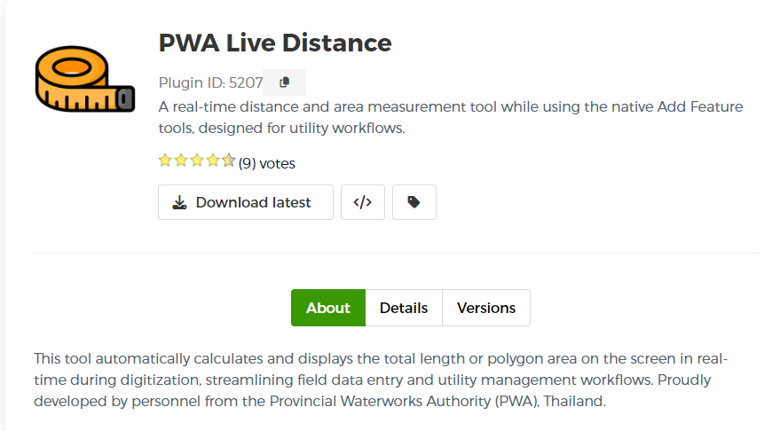
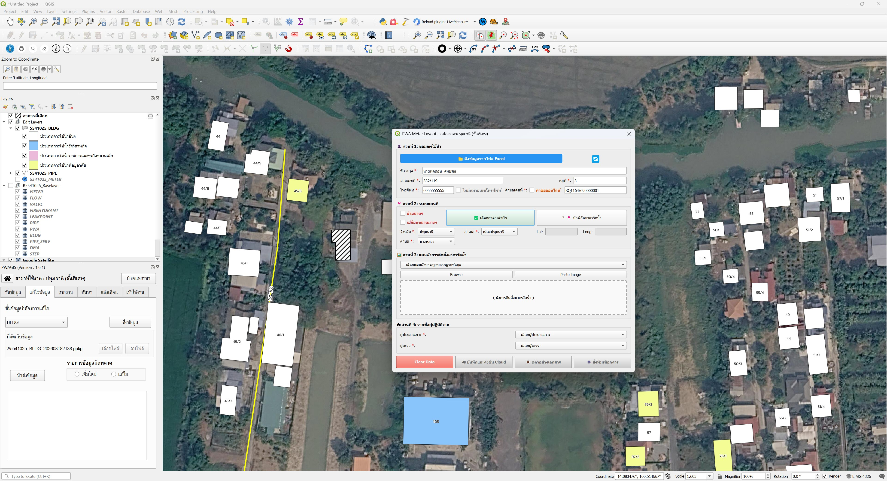
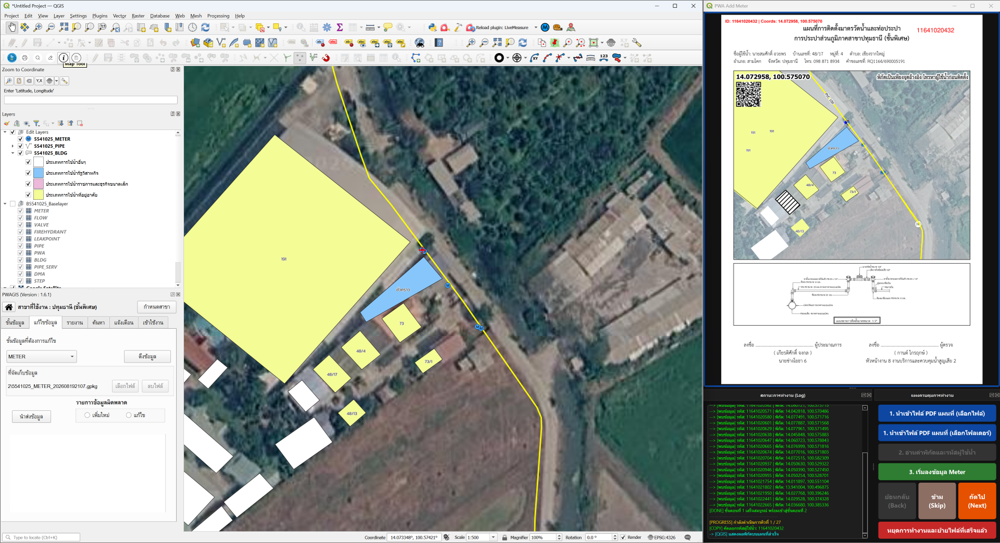

พัฒนาปลั๊กอิน ปรับแต่งเครื่องมือเฉพาะทาง และสร้างระบบวิเคราะห์ข้อมูลอัตโนมัติบน QGIS ตอบโจทย์ผู้ปฏิบัติงานและทีมงาน แม่นยำ รวดเร็ว และลดต้นทุนลิขสิทธิ์ซอฟต์แวร์อย่างยั่งยืน
พัฒนาปลั๊กอินเฉพาะทางตาม Workflow ของทีมงาน ด้วยภาษา Python พร้อมหน้าต่างใช้งาน (GUI) ที่เรียบง่าย สะดวกต่อทีมงานภาคสนามและสำนักงาน
พัฒนาระบบประมวลผลข้อมูลเชิงพื้นที่ปริมาณมากอัตโนมัติ (Batch Processing) บนระบบ QGIS รวมถึงรองรับระบบสคริปต์สำหรับเวิร์กโฟลว์เดิม (ArcPy Scripting) เพื่อลดขั้นตอนซ้ำซ้อน
ออกแบบและเชื่อมต่อระบบแผนที่เข้ากับฐานข้อมูลเชิงพื้นที่ PostgreSQL / PostGIS รวมถึงการดึงและส่งข้อมูลผ่าน REST API เพื่อการทำงานร่วมกันในทีม

โจทย์ของทีมงาน: การวางโครงข่ายสาธารณูปโภคที่ต้องกำหนดระยะทางที่แน่นอน ผู้ปฏิบัติงานต้องเสียเวลาวัดและปรับแก้หลายรอบ
โซลูชันจากเรา: พัฒนาปลั๊กอินที่ได้รับการเผยแพร่อย่างเป็นทางการบนคลัง QGIS ของโลก ช่วยคำนวณระยะทางแบบ Real-time ทันทีขณะวาดเส้น พร้อมระบบล็อกระยะจำกัดขอบเขตอัตโนมัติ
ผลลัพธ์: ลดขั้นตอนการวาดโครงข่าย ยกระดับความแม่นยำของข้อมูลพิกัด

โจทย์ของทีมงาน: ต้องเสียเวลาคีย์ข้อมูลจาก Excel ลงฟอร์มกระดาษ และแคปเจอร์แผนที่มาประกอบเพื่อพิมพ์ใบสั่งงานทีละรายการ
โซลูชันจากเรา: พัฒนาปลั๊กอินดึงข้อมูลจากไฟล์ Excel มาสร้างแผนผังพิกัดอัตโนมัติ พร้อมสแตมป์รายละเอียดสำคัญ (พิกัด, ลายเซ็นต์, QR Code) และส่งพิมพ์รายงานได้ในคลิกเดียว
ผลลัพธ์: ลดเวลาจาก 10 นาทีเหลือเพียงไม่กี่วินาทีต่อ 1 คำร้อง ส่งมอบใบสั่งงานหน้างานได้ถูกต้อง 100%

โจทย์ของทีมงาน: การพิมพ์นำเข้าข้อมูลพิกัดจากเอกสารรายงานจำนวนมากทีละบรรทัด เสี่ยงต่อการพิมพ์ผิดและใช้เวลานาน
โซลูชันจากเรา: พัฒนาเครื่องมือรองรับ Batch Processing สแกนดึงพิกัดจาก QR Code บน PDF อัตโนมัติ เลื่อนหน้าจอแผนที่ไปยังจุดเป้าหมาย พร้อมคัดลอกรหัสข้อมูลให้วางลงฐานข้อมูลส่วนกลางได้ทันที
ผลลัพธ์: เปลี่ยนเป็นระบบกึ่งอัตโนมัติ ลดข้อผิดพลาดเหลือ 0% และประหยัดเวลาการทำ Data Entry
รับโจทย์ ศึกษาโครงสร้างข้อมูล และกำหนดขอบเขตฟังก์ชันของเครื่องมือร่วมกัน
เขียนโค้ดสคริปต์ PyQGIS และออกแบบ UI ตามมาตรฐาน พร้อมส่งแบบทดลองเบื้องต้น
ทดสอบร่วมกับชุดข้อมูลจริง ตรวจสอบความถูกต้องทางพิกัด และปรับแต่งความเร็ว
ส่งมอบซอร์สโค้ด ตัวติดตั้งปลั๊กอิน พร้อมคู่มือและวิดีโอแนะนำการใช้งานอย่างครบถ้วน
เราไม่ได้เป็นเพียงนักเขียนโปรแกรมทั่วไป แต่เป็นนักปฏิบัติงานที่เข้าใจระบบสาธารณูปโภคและโครงสร้างข้อมูลเชิงพื้นที่อย่างลึกซึ้ง
มีประสบการณ์เชิงปฏิบัติการด้านแผนที่และระบบสาธารณูปโภค เข้าใจโครงสร้างข้อมูล (Topology) และระบบพิกัดอ้างอิง (CRS) สื่อสารโจทย์เทคนิคได้อย่างแม่นยำ
พัฒนาโซลูชันบนแพลตฟอร์ม Open Source เพื่อให้ผู้ใช้งานและทีมงานเป็นเจ้าของระบบอย่างแท้จริง ปราศจากข้อผูกมัดค่าลิขสิทธิ์รายปี
พัฒนาชุดคำสั่งตามมาตรฐานสากล (PEP 8) โครงสร้างโค้ดมีความยืดหยุ่น รองรับการขยายขีดความสามารถในอนาคต
ปฏิบัติงานภายใต้ข้อตกลงรักษาความลับ (NDA) อย่างเคร่งครัด เพื่อให้มั่นใจว่าข้อมูลของโครงการจะถูกปกป้องอย่างปลอดภัย
ระบุรายละเอียดเครื่องมือที่ต้องการพัฒนา ยินดีลงนามในข้อตกลงรักษาความลับ (NDA) ก่อนเริ่มการหารือรายละเอียดโครงการ